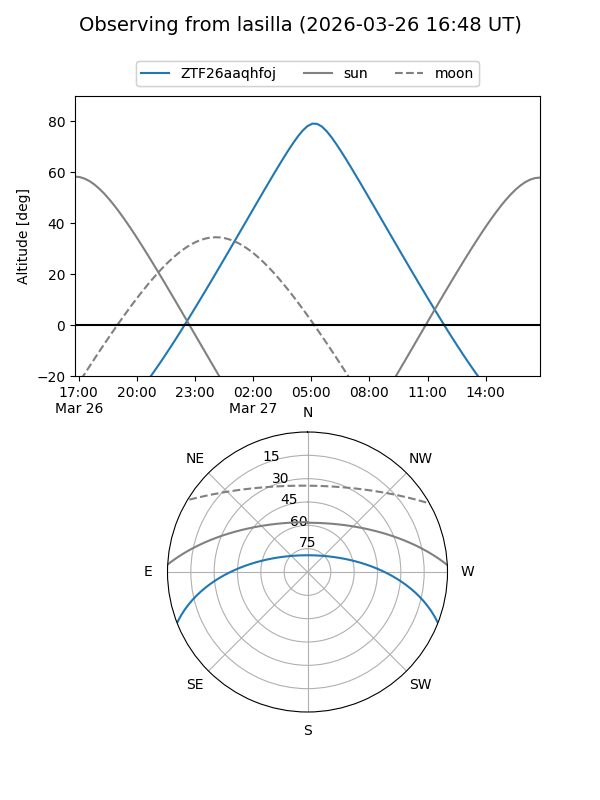
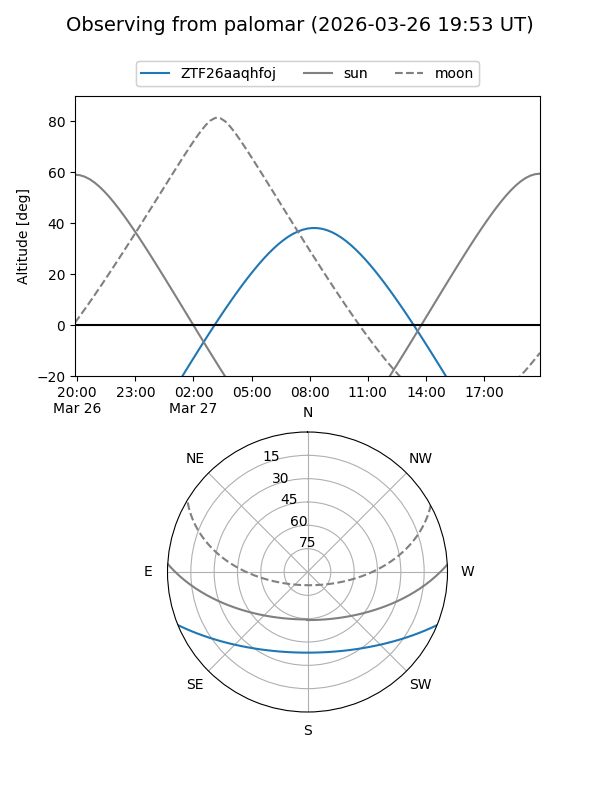

ZTF26aaqhfoj
Target ZTF26aaqhfoj at 2026-03-27 09:12
Aliases and brokers:
FINK: link
Lasair: link
ALeRCE: link
alt names
ZTF26aaqhfoj (ztf,fink_ztf)
Coordinates:
equatorial (ra, dec) = 190.9892,-18.34262
equatorial (HMS+DMS) = 12:43:57.40,-18:20:33.42
galactic (l, b) = (300.4429,+44.49297)
Flags:
Photometry:
last ztfg=16.64
1 ztfg detections
Lightcurve
Visibility


Additional plots